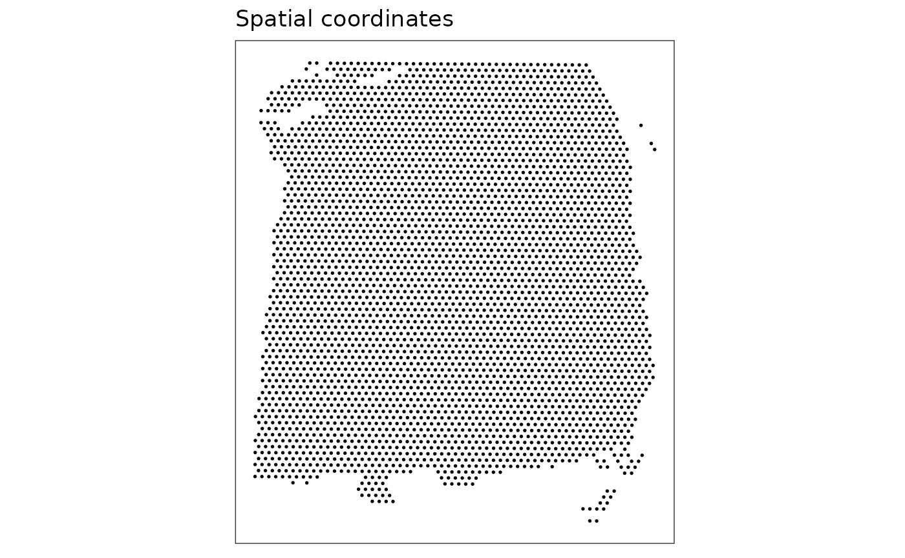
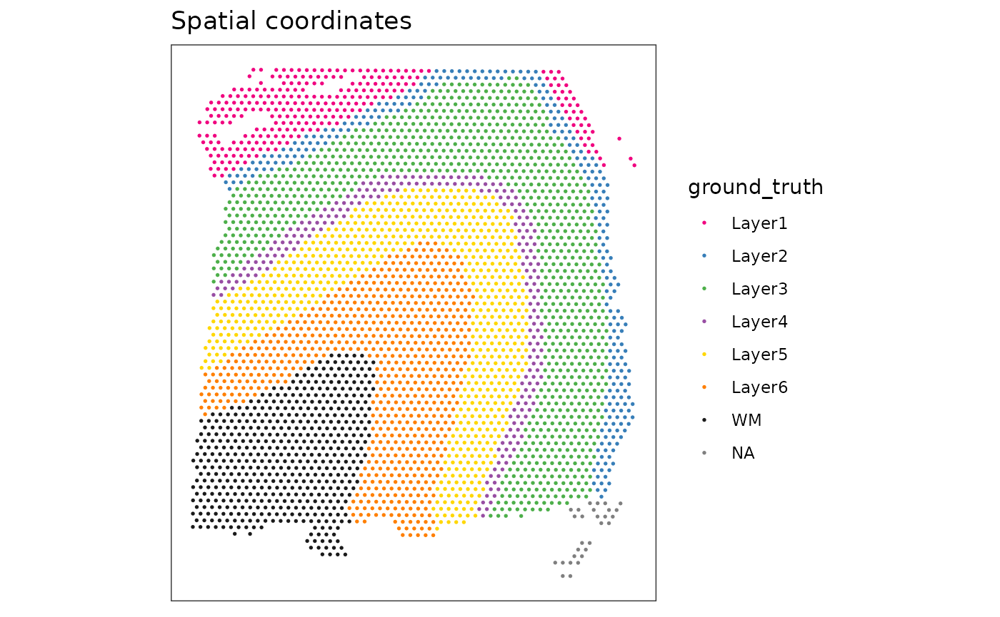
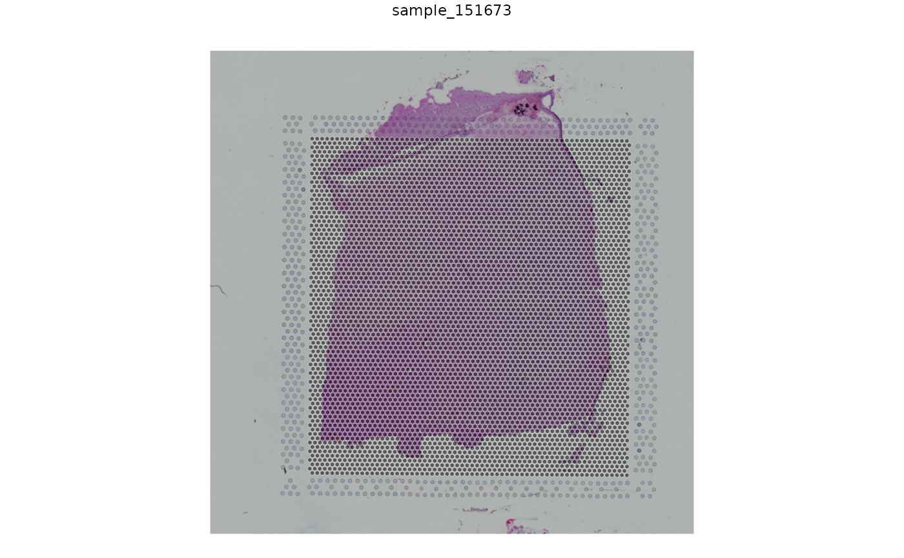
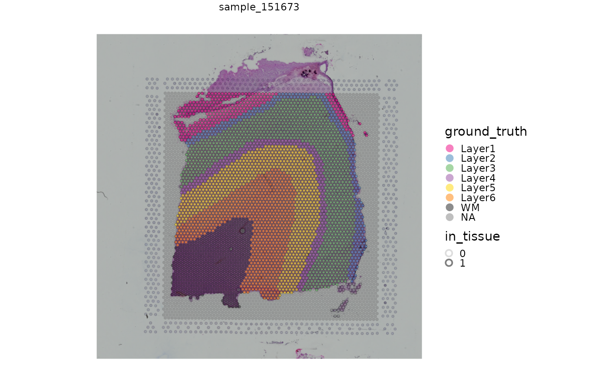

vignettes/Vig03_STexampleData.Rmd
Vig03_STexampleData.RmdThe STexampleData package provides access to several spatially resolved transcriptomics datasets, which have been formatted into the SpatialExperiment Bioconductor class.
These datasets have been collected from various publicly available sources, and cover several technological platforms.
We provide these datasets as SpatialExperiment objects to make them easier to access, so that we and others can use them for examples, demonstrations, tutorials, and other purposes.
Additional datasets from the 10x Genomics Visium platform are also available in the TENxVisiumData package (developed by Helena Crowell).
The package currently contains the following datasets:
Visium_humanDLPFC (10x Genomics Visium): A single sample (sample 151673) of human brain dorsolateral prefrontal cortex (DLPFC) in the human brain, measured using the 10x Genomics Visium platform. This is a subset of the full dataset containing 12 samples from 3 neurotypical donors, published by Maynard and Collado-Torres et al. (2021). The full dataset is available from the spatialLIBD Bioconductor package.
Visium_mouseCoronal (10x Genomics Visium): A single coronal section from the mouse brain, spanning one hemisphere. This dataset was previously released by 10x Genomics on their website.
seqFISH_mouseEmbryo (seqFISH): A subset of cells (embryo 1, z-slice 2) from a previously published dataset investigating mouse embryogenesis by Lohoff and Ghazanfar et al. (2020), generated using the seqFISH platform. The full dataset is available online.
The package can be installed from Bioconductor as follows.
BiocManager::install("STexampleData", version = "devel")Alternatively, the latest version can also be installed from GitHub. For this workshop, we use the latest development version from GitHub.
remotes::install_github("lmweber/STexampleData", ref = "no_accessors", build_vignettes = TRUE)First, we check the available datasets from the STexampleData package stored in Bioconductor’s ExperimentHub resource.
# load packages
library(ExperimentHub)
# query ExperimentHub resource
eh <- ExperimentHub()## snapshotDate(): 2021-08-04
query(eh, "STexampleData")## ExperimentHub with 6 records
## # snapshotDate(): 2021-08-04
## # $dataprovider: NA
## # $species: Mus musculus, Homo sapiens
## # $rdataclass: SpatialExperiment
## # additional mcols(): taxonomyid, genome, description,
## # coordinate_1_based, maintainer, rdatadateadded, preparerclass, tags,
## # rdatapath, sourceurl, sourcetype
## # retrieve records with, e.g., 'object[["EH5443"]]'
##
## title
## EH5443 | Visium_humanDLPFC_3_13
## EH5444 | Visium_mouseCoronal_3_13
## EH5445 | seqFISH_mouseEmbryo_3_13
## EH6708 | Visium_humanDLPFC
## EH6709 | Visium_mouseCoronal
## EH6710 | seqFISH_mouseEmbryoNext, we run a short example showing how to load one of the datasets from the STexampleData package.
Alternative ways of loading the datasets from ExperimentHub are shown in the package vignette.
# load packages
library(SpatialExperiment)
library(STexampleData)
# load dataset from latest development version
spe <- load_data("Visium_humanDLPFC")
# alternatively: load from ExperimentHub using named accessor function
# spe <- Visium_humanDLPFC()Then, we have a look at the structure of the SpatialExperiment object.
spe## class: SpatialExperiment
## dim: 33538 4992
## metadata(0):
## assays(1): counts
## rownames(33538): ENSG00000243485 ENSG00000237613 ... ENSG00000277475
## ENSG00000268674
## rowData names(3): gene_id gene_name feature_type
## colnames(4992): AAACAACGAATAGTTC-1 AAACAAGTATCTCCCA-1 ...
## TTGTTTGTATTACACG-1 TTGTTTGTGTAAATTC-1
## colData names(3): cell_count ground_truth sample_id
## reducedDimNames(0):
## mainExpName: NULL
## altExpNames(0):
## spatialData names(6) : barcode_id in_tissue ... pxl_col_in_fullres
## pxl_row_in_fullres
## spatialCoords names(2) : x y
## imgData names(4): sample_id image_id data scaleFactor
dim(spe)## [1] 33538 4992
assayNames(spe)## [1] "counts"
rowData(spe)## DataFrame with 33538 rows and 3 columns
## gene_id gene_name feature_type
## <character> <character> <character>
## ENSG00000243485 ENSG00000243485 MIR1302-2HG Gene Expression
## ENSG00000237613 ENSG00000237613 FAM138A Gene Expression
## ENSG00000186092 ENSG00000186092 OR4F5 Gene Expression
## ENSG00000238009 ENSG00000238009 AL627309.1 Gene Expression
## ENSG00000239945 ENSG00000239945 AL627309.3 Gene Expression
## ... ... ... ...
## ENSG00000277856 ENSG00000277856 AC233755.2 Gene Expression
## ENSG00000275063 ENSG00000275063 AC233755.1 Gene Expression
## ENSG00000271254 ENSG00000271254 AC240274.1 Gene Expression
## ENSG00000277475 ENSG00000277475 AC213203.1 Gene Expression
## ENSG00000268674 ENSG00000268674 FAM231C Gene Expression
colData(spe)## DataFrame with 4992 rows and 3 columns
## cell_count ground_truth sample_id
## <integer> <factor> <character>
## AAACAACGAATAGTTC-1 NA NA sample_151673
## AAACAAGTATCTCCCA-1 6 Layer3 sample_151673
## AAACAATCTACTAGCA-1 16 Layer1 sample_151673
## AAACACCAATAACTGC-1 5 WM sample_151673
## AAACAGAGCGACTCCT-1 2 Layer3 sample_151673
## ... ... ... ...
## TTGTTTCACATCCAGG-1 3 WM sample_151673
## TTGTTTCATTAGTCTA-1 4 WM sample_151673
## TTGTTTCCATACAACT-1 3 Layer6 sample_151673
## TTGTTTGTATTACACG-1 16 WM sample_151673
## TTGTTTGTGTAAATTC-1 5 Layer2 sample_151673
spatialData(spe)## DataFrame with 4992 rows and 6 columns
## barcode_id in_tissue array_row array_col
## <character> <integer> <integer> <integer>
## AAACAACGAATAGTTC-1 AAACAACGAATAGTTC-1 0 0 16
## AAACAAGTATCTCCCA-1 AAACAAGTATCTCCCA-1 1 50 102
## AAACAATCTACTAGCA-1 AAACAATCTACTAGCA-1 1 3 43
## AAACACCAATAACTGC-1 AAACACCAATAACTGC-1 1 59 19
## AAACAGAGCGACTCCT-1 AAACAGAGCGACTCCT-1 1 14 94
## ... ... ... ... ...
## TTGTTTCACATCCAGG-1 TTGTTTCACATCCAGG-1 1 58 42
## TTGTTTCATTAGTCTA-1 TTGTTTCATTAGTCTA-1 1 60 30
## TTGTTTCCATACAACT-1 TTGTTTCCATACAACT-1 1 45 27
## TTGTTTGTATTACACG-1 TTGTTTGTATTACACG-1 1 73 41
## TTGTTTGTGTAAATTC-1 TTGTTTGTGTAAATTC-1 1 7 51
## pxl_col_in_fullres pxl_row_in_fullres
## <integer> <integer>
## AAACAACGAATAGTTC-1 2435 3913
## AAACAAGTATCTCCCA-1 8468 9791
## AAACAATCTACTAGCA-1 2807 5769
## AAACACCAATAACTGC-1 9505 4068
## AAACAGAGCGACTCCT-1 4151 9271
## ... ... ...
## TTGTTTCACATCCAGG-1 9396 5653
## TTGTTTCATTAGTCTA-1 9630 4825
## TTGTTTCCATACAACT-1 7831 4631
## TTGTTTGTATTACACG-1 11193 5571
## TTGTTTGTGTAAATTC-1 3291 6317
head(spatialCoords(spe))## x y
## AAACAACGAATAGTTC-1 3913 2435
## AAACAAGTATCTCCCA-1 9791 8468
## AAACAATCTACTAGCA-1 5769 2807
## AAACACCAATAACTGC-1 4068 9505
## AAACAGAGCGACTCCT-1 9271 4151
## AAACAGCTTTCAGAAG-1 3393 7583
imgData(spe)## DataFrame with 2 rows and 4 columns
## sample_id image_id data scaleFactor
## <character> <character> <list> <numeric>
## 1 sample_151673 lowres #### 0.0450045
## 2 sample_151673 hires #### 0.1500150Next, we generate some simple plots of the dataset. We can use plotting functions available in the ggspavis package, which is available from GitHub.
# install ggspavis package
remotes::install_github("lmweber/ggspavis", build_vignettes = TRUE)Create some plots of the dataset in x-y coordinates. This dataset contains a set of manually annotated ground truth labels for cortical layers in the human brain, which we can use to display annotation on the plot.
# plot spots only
plotSpots(spe)
# plot spots with annotation
plotSpots(spe, annotate = "ground_truth")
We can also use a more flexible plotting function to display the spots and annotation along with the histology image as background, which is stored in the SpatialExperiment object. We also highlight spots located over tissue, which are identified with the “in_tissue” column in the spatialData.
# plots with histology background
plotVisium(spe)
plotVisium(spe, fill = "ground_truth", highlight = "in_tissue")
For some additional practice with these objects, attempt the following:
You can refer to the help files for the plotting functions with ?plotSpots and ?plotVisium.
For a further exercise, try adjusting the color palettes and other plotting options, as described in the help files.